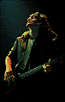

Trends continue to come and go, but the Toronto trio are hardly likely to go out of fashion, for they've never been in fashion even in England, where for years they have been consistent winners (individually and collectively) in music press polls.
How many other acts have gone directly to world-touring without ever trying either to write a hit or to cultivate an image?
We're talking confidence here. This month Rush are releasing their third audio concert (on CD, cassette and double album), AND their second feature-length video concert.
Once again the unmistakable voice of bassist Geddy Lee, the consistent percussive complexity of Neil Peart, and the characteristically brilliant playing of guitarist Alex Lifeson confirms Rush's place as the only giant in the Canadian rock jungle.
Rush are hugely alone. Virtually all of their competitors have capitulated. For similar proficiency you'll have to check out the condescending cats in fusion jazz. For a similar sense of adventure, you might look to Robert Plant, who inspired the group when he was with Led Zeppelin.
They started out by making five albums in 2 1/2 years. The Rush ambition was first hinted at in a progressive-metal mini-epic called "By-tor & The Snow Dog" on the second album Fly By Night, which also introduced the inventive percussion and lyrics of Neil Peart (replacing original drummer John Rutsey).
The breakthrough fourth album 2112, was a downright Wagnerian concept that made obvious their intention to be taken seriously. "Attention all planets of the Solar Federation ... We have assumed control ... "
And the fifth, the first live double, showed them to be at the head of their class. To move on they would have to establish their own school.
One year later, in September of 1977, came the first of their great albums, A Farewell To Kings. This was not just the next Rush album, this was the album by the next Rush. In one mighty, artistic stroke, it separated them from their peers. They were leaders. They would continue to have followers (more than one million at Rush concerts in the next nine months alone) but they would never again have imitators.
For if the guts of Rush were no longer metallic, the team still could not yet digest pop. Their spacey trip was purely post-psychedelic; their progress no longer owed anything to 'progressive' music.
After a more playful sequel called Hemispheres, though, the turn of the decade brought a dramatic shift in the direction of simplicity. One song on Permanent Waves was almost entirely in 4/4 time.
Moving Pictures was leaner still. Neil thinks of it as "the Who's Next of our career." The longest track, an 11-minute song called "The Camera Eye," was built around four insistent notes. Aside from "Tom Sawyer," the writing was uncommonly straightforward, though no less vivid. ("Living in a fisheye lens / Caught in the camera eye / I have no hears to lie / l can't pretend a stranger / Is a long-awaited friend. ")
 Signals and Grace Under Pressure continued their move away from arty far-out fantasy towards artistic here-and-now reality. They were mostly starker settings of darker visions.
Nonetheless, it was Power Windows (1985) that gave them back their hope. Its last song begins: "So many things I think about / When I look far away / Things I know things I wonder/ Things I'd like to say / The more we think we know about / The greater the unknown / We suspend our disbelief / And we are not alone. "
"I'm agnostic," said Neil at the time, "but curious, and romantic enough to want it to be true."
Hold Your Fire was hailed as the strongest album of their career, the set of songs most likely to be imitated. But Rush won't even imitate themselves.
As Geddy sang (in Neil's words), "The things that we're concealing / Would never let us grow / Time will do its healing / You've got to let it go."
Which is exactly what Rush have done.
Alex, Geddy and Neil are part way through the longest break of their careers. They have made no promises, not even to each other. They have no plans ever again to do another concert. Or not to. They haven't even decided when they are going to make a decision.
What they are doing is asking themselves hard questions about what they are doing.
"You start thinking that because you've been doing something for a long time, you should feel guilty that you've been doing it for so long," says Geddy. "Plus people come up to you all the time and say, Don't you want to do something different; And you go, well, sort of, yeah. But what do you do? I'm not a caterpillar that can just turn into a butterfly. You can't just snap your fingers and say, I'll change.
"The reason for this break," explains Geddy, "is one of those little awareness-moments where you realize you're burning out on being ambitious, that you're burning out on the treadmill of accomplishment.
"You work very hard writing. You work very hard recording. You take a token break to assume the role of husband and father and person-involved-in-other-things. You tantalize yourself with interests in art and architecture and baseball and whatnot. And then you leave...
"You're living one life and visiting another and trying to teach yourself to assimilate instantly -- you get home and you try to meld yourself into that person that you left... So we're finally taking time to fully live a settled life."
He is playing tennis with Alex and baseball with other friends. He's reading various histories and exploring divers' geographies. Recently he bought a cottage and is "looking for things to put in it. It's been designated as My Project by my benevolent wife, who is busy with her own career (she co-owns a Toronto-based clothing design company called Zapata), and has decorated many a home in her day, but has passed on the torch to me ... and I'm not too shabby either."
But hobbies aren't forever, it seems. After a while, "the game you play with yourself is how long can you stay away from working before you go nuts?"
Neil is nuts about bicycling.
An organized bicycle tour of China got him going. Since then he and a group of friends have cycled the Alps from Munich to Venice, the Pyrenees from Barcelona to Bordeaux and, this past year, the Rockies from Calgary to Vancouver.
He hopes that by the time you read this he will have brought his bicycle back from a trip to Western Africa.
"It's faster than walking, but still slow enough that you're intimately connected to your surroundings," he says. "And people are much more friendly to cyclists than to either pedestrians or motorists -- a cyclist is obviously a harmless eccentric."
He is also working intensely on writing. He has always been responsible for Rush lyrics; now he is concentrating on prose. Especially travel writing. "For me it's perfect. It's like Rush's music. There's nothing that doesn't fit into travel writing."
And no, he hasn't given up his addiction to reading, but now, he says, "I find I want to re-read every good book I ever read for enjoyment -- to see how it was done."
He has no book writing plans for himself yet. The learning is satisfaction enough. "It's like starting drumming over. At the beginning, improvement and progression come so rapidly, whereas after 20-odd years of drumming, I've reached the point of such small return that I know I'm at my potential. Without false humility or unworthy pride, I can say that I'm as good as I can be.
"And that's a difficult thing to face."
But as a friend recently wrote him, "Crisis is both danger and opportunity."
And fortunately, he doesn't feel he has stopped growing as a musician, which is how he uses his peaking skills as a drummer. "Your palette of colors may be full -- that's the drumming part -- but how you apply those colors, of course, that's the painting. And painting the arrangement together with the other guys, that part has lost none of its shine."
Geddy agrees. "Part of the reason that we are a trio," he says, "is because when we were younger we wanted to be busy. And strut our stuff. Not have to be subservient to another instrument.
"We were a technical band. We were musicians putting vehicles together for our musicianship. I think our approach is very different now. We're songwriters now, we're craftsmen -- composers and orchestrators and arrangers."
Geddy isn't looking to Neil just for attractive syllables to mouth, he wants to be singing something he can stand behind. "I have to feel comfortable with what he's saying."
Rush defines itself by the choices it makes moment by moment, song by song. "It's hard for us to see the big picture," says Geddy. "We really don't know what we're going to do before we do it."
Some songs suit them all instantly. "Others need more discussion, more exploration."
After all, accepting a new lyric often means committing to singing it hundreds times.
Musically there is a shared sense of purpose. "As much as we like to get heady or pseudointellectual," says Geddy, "the reason we play in a band is because we like to play rock. We like to play hard rock. I think that's the one thing you'd get the three of us to agree on: we don't want to be wimpy.
"So I guess whenever we feel like we're getting too mature, something in us rebels and wants to kick some butt!"
Sound like the formula for a perfect three-way marriage?
"The analogy is tempting," says Neil, "but the difference is that the nucleus of Rush is the work." Not the people.
"And while the work is binding, we're outside of it. So that takes a little pressure off the interpersonal part of it."
For example, "If someone suggests a different direction, you're at least willing to be open about it, because it doesn't threaten you as a person."
Geddy defines what they share as a sense of stability in the worth of what they are doing together.
"We're fortunate," says Neil, "that the essence of what we want to do happens to be engendered by our being rock fans."
They don't think they have a duty to the world. They do think they have a responsibility to their fans. But that responsibility does not include perpetuating themselves. Or leading anybody anywhere.
Nonetheless, they have some of the most fervent post-teen followers in the rock world. The previous live video showed thousands of air drummers doing unison reproductions of Neil's most complex foundation patterns and unison lip-sync on his most complex lyrics.
A particular challenge for Geddy was learning to relate to the audience personally. "We're such a formal band -- so damn structured. I've taken a more casual approach to talking to an audience over the last couple of years."
But it came hard. "I'm generally a quiet person off-stage -- unless I'm with my closest friends and being at one with 15,000 people made me uncomfortable. I didn't like the Hitlerian schtick so many bands use, demanding that you Have A Good Time. And I didn't have a lot to say."
But he has learned to give people the impression that he is being himself.
Fully occupied behind his drum kit, Neil doesn't have that problem, so he finds another: "the tendency to fall apart" when recording live, knowing that "every little inaccuracy, you don't just commit it into the ether of a live show, you commit it onto the firm iron oxide of rolling tape" -- and onto your inner consciousness, where it causes pain.
But he feels it's important. A live album ends to "cement an era" and gives the band time and encouragement for new exploration. "It has always marked a change for us, though not of conscious design."
Geddy dreaded going from the album to mixing the video.
"But you know? I really I enjoyed it. We were doing it to picture, and I never get to see us. There are effects and magical moments I'd never known were happening."
When he's on stage he has to think about the performance moment by moment. "For me the hardest thing to get right is to sing in key over the din of the hall and the crowd and the PA. So I'm concentrating on the monitors.
"You're also thinking about what you're playing on bass, foot-pedal moves, what song is coming up next so you can be in position to change switches to set up the next song on cue...
"At your peak you've got full peripheral awareness. You're all lit up. The stage is pumping and you're connected to everything going on. It's a high."
Does this sound like a man who might throw it all over for more art galleries and baseball games?
He feels even more positively about studio recording.
"Albums are really time-capsules for us. We go in with very little and work very intensely and come out with this finished thing. Who you are and what you're going through is very much a part of the record."
They have to have faith that no matter how an album turns out, it will prove one day to have been a necessary step on their way to wherever they're going.
"You experimented. You learned from it, and then let it go. You move on. Letting go is the tough part. It's probably the toughest part of life. But on you go."
On to the next thing.
Whatever that is.
Wilder Penfield III, who has been writing about music for for 20 years, is a columnist for the Toronto Sun.
{kind=link}
{kind=link}